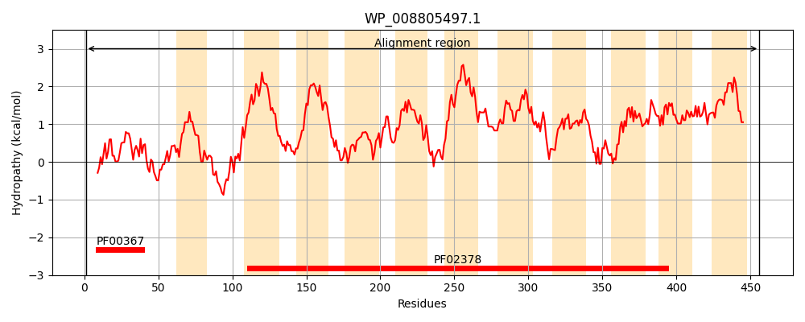
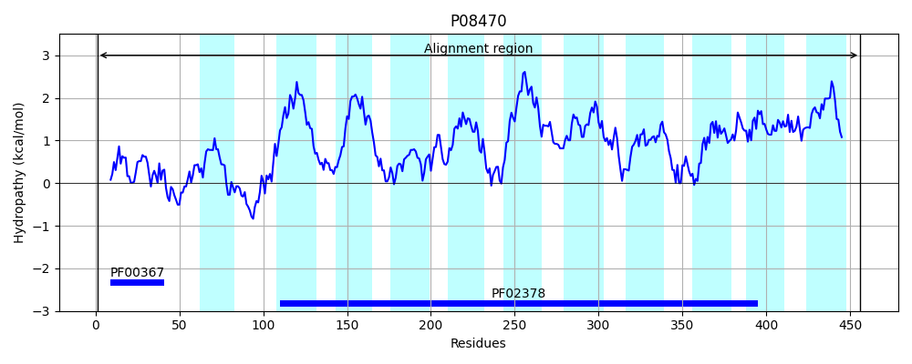
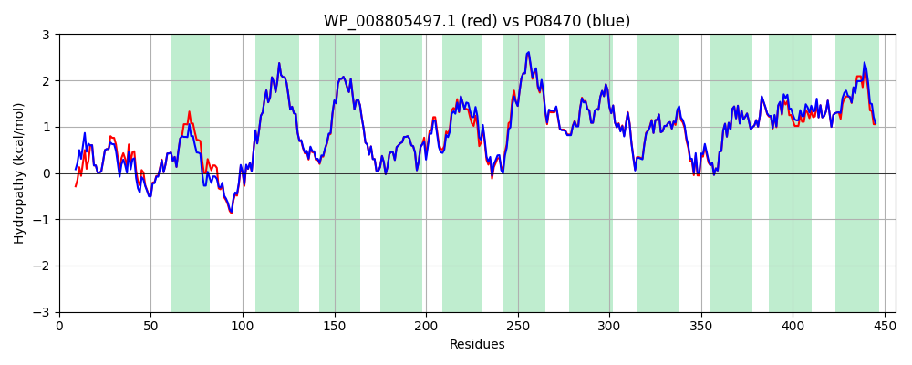

Hit Accession: P08470
Hit TCID: 4.A.1.2.1
Hit Description: gnl|BL_ORD_ID|8463 gnl|TC-DB|P08470|4.A.1.2.1 PTS system, sucrose-specific IIBC component (EIIBC-SCR) (Sucrose- permease IIBC component) (Phosphotransferase enzyme II, BC component) (EC 2.7.1.69) (EII-SCR) - Salmonella typhimurium.
Mach Len: 456
e:0.000000
Query TMS Count : 11
Hit TMS Count: 11
TMS-Overlap Score: 13.150000
Predicted Substrates:CHEBI:9314;sucrose
BLAST Alignment:
Score: 2210 , Bit scores: 855 bits, E-value: 0.0e+00, Alignment length: 456, Percentage identity: 95
Query: 1 MDFDQISRSLLPLLGGKENIASAAHCATRLRLVLVDDALADQQAIGKIDGVKGCFRNAGQMQIIFGTGVVNKVYAAFIQAAGISESSKSEAADLAAKKLNPFQRIARLLSNIFVPIIPAIVASGLLMGLLGMVKTYGWVDPSNAIYIMLDMCSSAAFIILPILIGFTAAREFGGNPYLGATLGGILTHPALTNAWGVAAGFHTMNFFGIEVAMIGYQGTVFPVLLAVWFMSMVEKRLRRVIPDALDLILTPFLTVIISGFIALLLIGPAGRALGDGISFILSTLISHAGWLAGLLFGGLYSVIVITGIHHSFHAIEAGLLGNPSIGVNFLLPIWAMANVAQGGACFAVWFKTKDAKIKAITLPSAFSAMLGITEAAIFGINLRFVKPFIAALVGGAAGGAWVVSMHVYMTAVGLTAIPGMAIVQASSLLNYIIGMAIAFAVAFMLSLTLKYKTDAE 456
MDF+QIS SLLPLLGGKENIASAAHCATRLRLVLVDD+LADQQAIGK++GVKGCFRNAGQMQIIFGTGVVNKVYAAF QAAGISESSKSEAAD+AAKKLNPFQRIARLLSNIFVPIIPAIVASGLLMGLLGMVKTYGWVDP NAIYIMLDMCSSAAFIILPILIGFTAAREFGGNPYLGATLGGILTHPALTNAWGVAAGFHTMNFFG E+AMIGYQGTVFPVLLAVWFMS+VEK+LRR IPDALDLILTPFLTVIISGFIALL+IGPAGRALGDGISF+LSTLISHAGWLAGLLFGGLYSVIVITGIHHSFHA+EAGLLGNPSIGVNFLLPIWAMANVAQGGAC AVWFKTKDAKIKAITLPSAFSAMLGITEAAIFGINLRFVKPFIAAL+GGAAGGAWVVS+HVYMTAVGLTAIPGMAIVQASSLLNYIIGM IAF VAF +SL LKYKTDAE
Sbjct: 1 MDFEQISCSLLPLLGGKENIASAAHCATRLRLVLVDDSLADQQAIGKVEGVKGCFRNAGQMQIIFGTGVVNKVYAAFTQAAGISESSKSEAADIAAKKLNPFQRIARLLSNIFVPIIPAIVASGLLMGLLGMVKTYGWVDPGNAIYIMLDMCSSAAFIILPILIGFTAAREFGGNPYLGATLGGILTHPALTNAWGVAAGFHTMNFFGFEIAMIGYQGTVFPVLLAVWFMSIVEKQLRRAIPDALDLILTPFLTVIISGFIALLIIGPAGRALGDGISFVLSTLISHAGWLAGLLFGGLYSVIVITGIHHSFHAVEAGLLGNPSIGVNFLLPIWAMANVAQGGACLAVWFKTKDAKIKAITLPSAFSAMLGITEAAIFGINLRFVKPFIAALIGGAAGGAWVVSVHVYMTAVGLTAIPGMAIVQASSLLNYIIGMVIAFGVAFTVSLVLKYKTDAE 456 | Protein Hydropathy Plots: |
|---|
|  |  |
Pairwise Alignment-Hydropathy Plot:
|
|---|
|  |